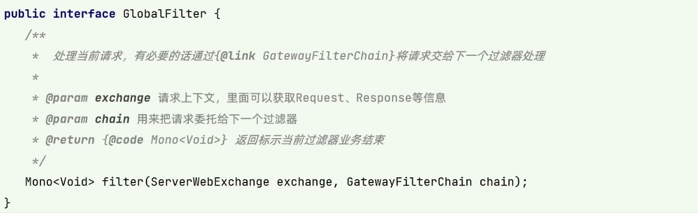

1、微服务架构介绍
1.1、微服务概念
微服务就是将一个单体架构的应用按业务划分为一个个独立运行的程序即服务，他们之间通过 HTTP 协议进行通信（也可以采用消息队列来通信，如 RabbotMQ、Kafaka 等），可以采用不同的编程语言，使用不同的存储技术，自动化部署（如Jenkins）减少人为控制，降低出错概率。服务数量越多，管理起来越复杂，因此采用集中化管理。例如 Eureka，Zookeeper 等都是比较常见的服务集中化管理框架。
微服务是一种架构风格。有两个特点：
- 职责单一：一个微服务解决一个业务问题（注意是一个业务问题而不是一个接口）。
- 面向服务：将自己的业务能力封装并对外提供服务，这是继承SOA的核心思想，一个微服务本身也可能调用其它的微服务。
1.2、微服务设计原则
AKF 拆分原则
前后端分离原则
无状态服务
状态：如果一个数据需要被多个服务共享，才能完成一笔交易，那么这个数据被称为状态。进而依赖这个状态数据的服务被称为有状态服务，反之称为无状态服务。
例如对空调的设置：1、若空调遥控器发送加一或减一的指令，空调根据现在的温度计算并调整温度，则空调提供的是有状态服务，状态是空调当前温度。2、若空调遥控器发送的是加一或减一之后的温度数值，空调根据接收到的温度数值设置温度，则空调提供的是无状态服务。
Restful 通信风格
2、Eureka 注册中心
应用微服务化之后，首先遇到的第一个问题就是服务发现问题，一个微服务如何发现其他微服务呢？最简单的方式就是每个微服务里面配置其他微服务的地址，但是当微服务数量众多的时候，这样做明显不现实。所以需要使用到微服务架构中的一个最重要的组件：服务注册中心，所有服务都注册到服务注册中心，同时也可以从服务注册中心获取当前可用的服务清单。
2.1、注册中心概念
注册中心可以理解为微服务架构中的“通讯录”。它记录了服务和服务地址的映射关系。在分布式架构中，服务会注册到这里，当服务需要调用其他服务时，就到这里找到服务的地址，进行调用。
1 | 张三办了张新的电话卡并将号码告诉我，我将其名字和号码的映射保存进通讯录。 -- 服务注册 |
总结：服务注册中心的作用就是服务的注册和服务的发现。
2.2、Eureka 入门案例
1、创建一个 SpringBoot 项目并引入web、test和下方两个依赖 。
1 | <dependency> |
2、application.yaml 如下
1 | server: |
3、启动类前添加 @EnableEurekaServer 注解
1 |
|
4、启动后访问 http://localhost:8761/ 便会显示 eureka 页面。
2.3、高可用 eureka 注册中心搭建
2.3.1、搭建注册中心
创建两个 2.2 的注册中心，url不能相同，即若两个注册中心在同一台主机上，则端口号不能相同，若在不同主机上端口号可以相同。两个注册中心只有 yaml 主配置文件不同，分别如下，其他相同。
1 | # server01 |
注意：两个注册中心要同时启动，否则在 springboot 启动后无法检测到另一个注册中心使得 eureka 抛异常。
此时再访问 http://localhost:8761/ 或 http://localhost:8762/ 就会看到两个注册中心。
eureka 实例可以作为服务提供者也可以作为注册中心。其默认ID为 “主机名:应用名:端口”，如“localhost:eureka:8761 ”。可以通过下方配置将其设置为ip:port 。一般都使用 ip：port 的方式。
1 | eureka: |
2.3.2、搭建 service-provider
1、新建 SpringBoot 项目并引入依赖
1 | <dependency> |
2、主配置文件如下
1 | server: |
3、创建 entity、service、impl、controller 任意实现一个功能接口。
4、可以正常访问该微服务提供的接口
5、访问 http://localhost:8761 可以看到两个注册中心和一个名为 service-provider 的微服务。
2.3.3、搭建 service-consumer
1、新建 SpringBoot 项目并引入依赖
1 | <dependency> |
2、主配置文件如下
由于该纯粹的消费者没有注册到注册中心，故访问 http://localhost:8761 时不会显示该消费者的信息。
1 | server: |
3、服务消费者有三种访问服务的方法：DiscoveryClient、LoadBalancerClient、@LoadBalanced。这三种方法从左到右依次越来越方便使用。下方只展示第三种使用方法。
- 主启动类
1 |
|
- serviceImpl类
1 |
|
其他的 pojo 和 controller 都很常规。至此，完整的 Eureka 微服务体系完成。
2.4、Eureka 架构原理

Replicate 表示多个注册中心之间的数据同步。
2.5、CAP 原则
C 为保证数据一致性，A 为服务高可用即快速响应，P 为分区容错即分布式。
任何时候，只能在 CP , AP , CA 中三选一，不可能同时满足三个。
CA 不能实现分布式。一般用于规模小，不打算扩展的应用。MySQL
AP 不能实现一致性。一般是前几步操作满足快速响应，后续实现一致性。金融领域绝对不允许使用AP。
CP 不能实现快速响应。分布式数据库，如 Redis、MongoDB 等。
2.6、Eureka 自我保护
2.6.1、启动自我保护条件
一般情况下，服务在 Eureka 上注册后，会每 30 秒发送一个心跳包，Eureka 通过心跳来判断服务是否健康，同时定期删除超过 90 秒没有发送心跳的服务。
但是 Eureka 收不到心跳不只是微服务自身的原因，还有可能是微服务与 Eureka 之间的网络故障引起。
因此 Eureka 会在运行期间去统计心跳失败比例是否在 15 分钟之内低于 85%，如果低于 85% Eureka 会将这些服务保护起来，同时提示一个警告。这种算法就是 Eureka 的自我保护模式。
2.6.2、如何关闭自我保护
1 | eureka: |
2.7、eureka 优雅停服
配置优雅停服后，无需关闭自我保护。
1、在服务提供者 service-provider 中添加依赖
1 | <dependency> |
2、在 service-provider 的配置文件中添加下方配置
1 | # 度量指标监控与健康检查 |
配置完成后，使用 POST 访问 http://localhost:7070/actuator/shutdown 即可实现停止服务器。
2.8、eureka 安全认证
只有经过授权才可以在注册中心注册服务或拉取服务。
1、在所有的注册中心添加依赖
1 | <dependency> |
2、在所有的注册中心配置安全认证
1 | spring: |
3、在所有的注册中心、服务提供者、服务消费者重新配置注册中心地址
1 | # 配置 eureka 注册中心 |
仅配置完这些，访问 http://http://localhost:8761/ 并登陆后会发现没有任何注册中心和服务，这是因为都被 CSRF 拦截了。
4、过滤 CSRF
eureka 会自动化配置 CSRF 防御机制， Spring Security 认为 POST , PUT , DELETE 都是有风险的，如果这些 method 发送时没有带上 CSRF token 就会被拦截并返回 403。
方案一：使 CSRF 忽略 /eureka/** 的所有请求。
在所有注册中心的 config 包中添加如下配置类。
1 |
|
方案二：禁用 CSRF 防御机制
在所有注册中心的 config 包中添加如下配置类。
1 |
|
3、Ribbon
3.1、Ribbon 的概念
Ribbon 是一个基于 HTTP 和 TCP 的客户端负载均衡工具，它不需要像注册中心、网关那样独立部署，但是几乎存在于每个 Spring Cloud 微服务中。 Feign 提供的声明式服务调用也是基于 Ribbon 实现的。
Ribbon 提供了一套微服务的负载均衡解决方案。
负载均衡即当多个节点提供相同的服务时，选择其中一个提供服务，使得服务器整体的负载平衡。
3.2、负载均衡分类
业界主流负载均衡分为两类：
- 集中式负载均衡（服务器负载均衡），即在 consumer 和 provider 之间使用独立的负载均衡设施，如 Nginx
- 进程内负载均衡（客户端负载均衡），即将负载均衡逻辑集成到 consumer ，如 Ribbon
3.3、Ribbon 负载均衡策略
3.3.1、轮询策略（默认）
对应类名：RoundRobinRule
原理：即按顺序选取下一个
3.3.2、权重轮询策略
对应类名：WeightedResponseTimeRule
原理：响应时间越快的被选中的概率越大
3.3.3、随机策略
对应类名：RandomRule
原理：随便选一个
3.3.4、最少并发数策略
对应类名：BestAvailableRule
原理：找并发数最少的 provider
3.3.5、重试策略
对应类名：RetryRule
原理：轮询策略的加强版，如果失败会重新尝试其他节点。
3.3.6、可用性敏感策略
对应类名：AvailabilityFilteringRule
原理：过滤掉连接失败和高繁忙的节点
3.3.7、区域敏感性策略
对应类名：ZoneAvoidanceRule
原理：对一个区域考察，丢弃不可用区域的 provider。
3.4、Ribbon 入门案例
Ribbon 对于集群的服务采用的负载均衡策略默认为轮询模式。
在 eureka 项目的基础上复制一份 service-provider 命名为 service-provider02 ，将 service-provider02 的端口设置为7071，应用名依然为 service-provider 。即现在存在提供完全相同服务的两个站点。将注册中心和服务提供者都启动后显示如下：

可以看到有两个集群，一个是由两个注册中心组成的集群，一个是由微服务组成的集群。
当 service-consumer 调用 service-provider 时就会在微服务集群中按顺序轮询访问节点。
3.5、Ribbon 负载均衡策略设置
3.5.1、全局
在启动类或配置类中注入负载均衡策略对象。所有服务请求都使用该策略。例如：在启动类添加如下代码。
1 |
|
3.5.2、局部
在 service-consumer 的配置文件中添加如下：
1 | # 负载均衡策略 |
3.6、Ribbon 点对点直连
点对点直连是指绕过注册中心，直接连接服务提供者获取服务。一般在测试阶段使用较多，在测试阶段每次都要所有全部启动太麻烦，点对点直连可以不用启动注册中心。
1、将 service-consumer 中 eureka 的依赖和配置都注释掉，并引入依赖
1 | <dependency> |
2、在 service-consumer 的主配置文件中添加如下配置
1 | # 负载均衡策略 |
配置完成后只启动 service-provider 和 service-consumer ，此时 service-consumer 依然可以正常访问 service-provider。
4、Feign
4.1、Feign 的概念
Feign 是 SpringCloud Netflix 组件中的一个轻量级 RESTful 的 HTTP 客户端，实现了负载均衡和Rest 调用的开源框架，封装了 Ribbon 和 RestTemplate ，实现了 WebService 的面向接口编程，进一步降低了项目的耦合度。
Feign内置了 Ribbon ，因此客户端可以负载均衡地调用服务注册中心的服务。
在 2.2.3 节提及了三种消费者调用服务的方法，Feign 其实就是一种比它们更简单的调用方法。
Feign 是一种声明式、模板化的 HTTP 客户端
Feign 的使用方式是：使用 Feign 的注解定义接口，调用这个接口就可以调用服务注册中心的服务。
4.2、Feign 入门案例
保留 Eureka 项目中的所有注册中心和所有 service-provider，并只保留下 Eureka 的依赖与配置，且将多余的安全认证、健康检查等依赖与配置全部删除。
Feign 的基本使用步骤：
- 服务消费者添加 Feign 依赖；
- 创建业务层接口，添加
@FeignClient注解声明需要调用的服务； - 业务层抽象方法使用 SpringMVC 注解配置服务地址及参数；
- 启动类添加
@EnableFeignClients注解激活 Feign 组件。
按照上面步骤举例：
1、创建 feign-consumer 模块
2、在 feign-consumer 中添加依赖
1 | <dependency> |
3、在 feign-consumer 的主配置文件中添加配置
1 | server: |
4、 feign-consumer 的逻辑为 OrderController 调用 OrderService，OrderService 的实现类 OrderServiceImpl 中远程调用 service-provider 提供的服务完成业务逻辑。实现远程调用的方式为新建一个接口且由 @FeignClient修饰，该接口会调用远程服务，其不需要实现类。下方代码中名称为 service-provider 的服务在 /product/list 路径下提供了 OrderServiceImpl 所需的服务。
1 | // 声明需要调用的服务 ， 括号内的值为 服务名 |
5、 OrderServiceImpl 代码如下
1 |
|
6、在启动类添加 @EnableFeignClients 注解启动 Feign 组件。
1 |
|
完成上述步骤就可以正常访问了。
4.3、Feign 负载均衡
Feign 封装了 Ribbon 自然也就集成了负载均衡功能，默认采用轮询策略。修改负载均衡策略的方法与 Ribbon 相同。
4.3.1、全局
在启动类或配置类中注入负载均衡策略对象。所有服务请求都使用该策略。例如：在启动类添加如下代码。
1 |
|
4.3.2、局部
在 service-consumer 的主配置文件中添加如下：
1 | # 负载均衡策略 |
4.4、Feign 请求传参
GET ——> 使用
@PathVariable或@RequestParam接收参数。POST ——-> 使用
@RequestBody注解接收请求参数。
1 | // 声明需要调用的服务 ， 括号内的值为 服务名 |
4.5、Feign 性能调优
4.5.1、gzip 压缩
gzip 是一种数据格式，采用 deflate 算法压缩数据，当压缩一个纯文本（html、css等）时能减少 70% 空间，显然网络数据经过 gzip 压缩后的传输更快。
HTTP协议关于压缩传输的规定：
1、客户端向服务器请求中带有: Accept-Encoding:gzip ，deflate 字段，向服务器表示客户端支持的压缩格式(gzip 或者deflate)，如果不发送该消息头，服务端默认是不会压缩的。
2、服务端在收到请求之后，如果发现请求头中含有Accept-Encoding 字段，并且支持该类型压缩，就会对响应报文压缩之后返回给客户端，并且携带Content- Encoding:gzip消息头，表示响应报文是根据该格式进行压缩的。
3、客户端接收到请求之后，先判断是否有Content-Encoding 消息头，如果有，按该格式解压报文。否则按正常报文处理。
局部开启 gzip 压缩
1 | # service-consumer 的主配置文件添加下方配置 |
全局开启 gzip 压缩
1 | # service-consumer 的主配置文件添加下方配置 |
4.5.2、HTTP 连接池
两台服务器之间建立 HTTP 连接的过程很复杂，而微服务之间远程调用可能比较频繁却又只传输少量数据，因此大部分时间被浪费在建立连接上。
采用 HTTP 连接池可以节省大量的 3 次握手 4 次挥手，从而提升吞吐量。
Feign 的 HTTP 客户端支持 3 种框架：HttpURLConnection、HttpClient、OkHttp。默认是 HttpURLConnection，但 HttpURLConnection 是 JDK 自带的，不支持 HTTP 连接池，需要手写。
HttpClient 支持 HTTP 连接池且使得 HTTP 请求简化，HttpClient 还支持通过 get 请求传递对象参数，因此推荐使用 HttpClient 。
HttpClient 使用步骤如下：
1、在 service-consumer 中引入依赖
1 | <!-- 这个依赖已经被 Spring Cloud 集成，可以不用添加 --> |
2、在 service-consumer 的主配置文件中添加如下配置
1 | feign: |
只要完成上述步骤，我们在代码层面不需要做任何改变，就已经开始使用 HTTP 连接池了。
5、Nacos
Nacos 也是注册中心，是阿里的产品，比 Eureka 的功能更丰富。
Eureka 的注册中心需要自己创建，Nacos 的注册中心独立出来需要下载，安装并开启后可直接使用。
5.1、Nacos 使用指南
5.1.1、开启注册中心
1、在 https://github.com/alibaba/nacos/releases/tag/1.4.2 下载 nacos ，选择 1.xx 版本。
2、进入 nacos 的 bin 目录，打开 cmd，输入 startup.cmd -m standalone以单节点模式开启 nacos 。
5.1.2、配置微服务
1、在父工程中引入依赖，用以控制阿里系列产品的版本。
1 | <dependencyManagement> |
2、在微服务中引入依赖
1 | <dependency> |
3、在微服务的主配置文件配置注册中心地址
1 | server: |
4、访问 http://localhost:8848/nacos/index.html ，用户名和密码都是 nacos ，登陆进去即可查看注册中心。
5.2、Nacos 服务分级存储模型
一个服务可以有多个实例，出于容灾考虑将这些实例分散于不同的城市（地区）。Nacos 将处于同一个城市的所有实例组成一个集群，存储模型如下图：一级为服务（Userservice）、二级为集群(Beijing)、三级为实例(运行该服务的某台主机)。

服务跨集群调用问题
由于集群间距离太远，传输延时很高，因此一个服务调用另一个服务时，应该尽可能地调用本地集群中的服务，只有当本地集群中的服务不可用时才去跨集群调用服务。
配置服务集群属性
1 | spring: |
由于 nacos 集成 ribbon 以实现负载均衡，因此仅配置集群名称后服务间调用仍然采用 ribbon 默认的轮询策略，故需要在调用者的主配置文件中修改 ribbon 的负载均衡规则来实现集群内优先调用。
1 | # service-provider 是被调用的微服务的名称 |
NacosRule 会优先访问本地集群中的服务，只有本地集群内该服务的所有实例都不能使用后才会跨集群访问，同时报出跨集群访问的警告，在确定访问的集群后会在集群内的多个实例之间采用随机的方式访问。
5.3、根据权重负载均衡
由于设备更新出现设备间性能差异问题，性能好的设备应该承担更多访问压力，此时可以配置实例的权重，权重越大被访问的频率越高。（权重一般在 0 ~ 1 之间，默认为 1）
配置方法：进入 nacos 控制台 -》服务管理 -》 服务列表 -》点击服务的详情 -》点击具体实例中的编辑 -》输入权重。
在控制台配置完就可以了，源代码无需做任何改变。
改变权重和改变策略是对负载均衡的不同层面的配置。
配置权重是在被调用者的 nacos 控制台配置。
配置负载均衡策略是在调用者的主配置文件配置。
改变权重是改变访问的频率，访问策略仍然是在调用者的配置文件中配置的策略。如上方配置负载均衡策略为 NacosRule 后，访问时仍然是尽可能地访问本地集群中的实例，只是在本地集群中的众多实例中选择时选择权重更大的概率高一点。
如果把权重设置为 0 ，则该实例完全不会被访问，基于此可以实现服务的平滑升级。即一个服务有多个实例，先把一个实例的权重设为 0，然后升级重启，再改回 1，之后对其他实例逐个进行此操作。
5.4、环境隔离 namespace
nacos 即是服务注册中心也是数据中心。
nacos 的隔离级别从上往下依次是 namespace 、group、service/data、集群、实例。
namespace是最外层的隔离。
产品的开发环境、测试环境、发布环境等由 namespace 层隔离。功能衔接较紧密的服务（如订单和支付）可以划分到一个 group、之后的三层在存储模型中已经写过。
以上的这些隔离级别都是 nacos 提供的功能，可以使用但不强制使用。
配置环境隔离
默认的 namespac 为 自动生成的 public。可以在 nacos 控制台的命名空间中新建命名空间，新建完成会自动生成命名空间 ID，之后在被调用者的主配置文件中配置命名空间。
1 | spring: |
之后重启该服务即可。隶属于不同命名空间中的服务之间相互不可见，因此不能相互调用。
5.5、nacos 和 eureka 的区别
两者都是注册中心，注册中心的基本功能就是服务提供者向注册中心注册信息，服务消费者从注册中心定期拉取这些信息，然后服务消费者远程访问服务提供者提供的服务。

健康检查：eureka 中所有实例都定期发送心跳，注册中心根据心跳检测是否存活。nacos 将实例分为临时实例和非临时实例，临时实例和 eureka 相同都是检测心跳，若没有心跳则直接删除。非临时实例不发送心跳，而是注册中心定期主动询问是否存活，若不存活也不删除而是等待其再次恢复。
消息更新：eureka 只有服务消费者定期从注册中心拉取信息。而 nacos 除了每 30 秒拉取一次外，为了防止在拉取期间服务停掉导致的错误，当服务提供者的信息改变（如死亡）时会主动向服务消费者推送变更的信息。
nacos 集群默认采用 AP 方式，当集群中存在非临时实例时，采用 CP 方式。 eureka 只有 AP 方式。
设置非临时实例
nacos 默认所有实例都是临时实例。非临时实例需要在主配置文件中配置。非临时实例对服务器的压力较大。
1 | spring: |
5.6、nacos 配置管理
一个项目可能有成百上千的微服务组成，有一些微服务的部分配置是相同的，如果这些配置要更改则要对每个微服务都修改，然后重新部署，这样不仅费时还可能对整个业务造成影响。
可以将这些相同的配置摘取出来统一配置管理，微服务读取统一配置和本地配置组成完整配置。当统一配置改变时可以通知各微服务，让其读取新配置，这样就可以实现配置热更新。
5.6.1、统一配置管理实现
一、新建统一配置
打开 nacos 控制台 -》配置管理 -》配置列表 -》点加号进入新建配置
Data ID 必须唯一，一般为 微服务名 - 环境.yaml。例如 userservice-dev.yaml。group 默认，格式选 yaml。并不是所有配置都复制上去，只添加有热更新需求的配置（如关键参数、运行时需要调整的参数）。
二、发现配置管理地址
不涉及统一配置管理时，springboot 启动顺序为 启动 springboot -》 读取本地 application.yaml 配置文件 -》 创建 IOC 容器 -》 加载 bean。
添加统一配置管理后，springboot 启动顺序为 启动 springboot -》读取统一配置管理的配置文件 -》读取本地 application.yaml 配置文件 -》 创建 IOC 容器 -》 加载 bean。
如果把统一配置管理的地址等信息配置到本地 application.yaml 配置文件时，则按照上述启动顺序我们无法在读取统一配置管理的配置文件前知道其地址在哪里。springboot 提供一个 bootstrap.yaml 文件，其启动顺序非常靠前，因此可以把统一配置管理的地址信息放在该文件中。具体做法如下：
1、引入 nacos 的配置管理客户端依赖
1 | <dependency> |
2、在微服务的 resources 目录下新建 bootstrap.yaml 文件，这是引导文件，优先级高于 application.yaml。
1 | # bootstrap.yaml |
上方在控制台新建配置时，Data ID 的命名规范即为 应用名称-开发环境.yaml，因此该文件中的信息恰好能唯一地指定配置文件。配置文件的地址即为 nacos 注册中心地址也已经配置。
3、把 application.yaml 中与 bootstrap.yaml 重复的配置删除并启动服务即可。
对程序而言，统一配置和本地配置没有任何区别，例如都可以使用 @Value(“${xxx.xxx}”)来读取配置的信息。
5.6.2、统一配置自动刷新
完成 5.6.1 的步骤后还需要添加本节的步骤以实现配置的自动刷新。
假设统一配置文件中包含有下方配置
1 | pattern: |
根据配置注入的两种不同方式，自动刷新也有两种不同实现方式。
- 方式一： @Value(“${xxx.xxx}”)
使用这种方式注入配置时，在使用该种方式的的类前添加 @RefreshScope 注解。
1 |
|
- 方式二：
@ConfigurationProperties(prefix = "xxx")
使用这种方式注入配置时，专门创建一个类来接收配置的注入。推荐使用这种方式
1 |
|
使用方法如下：
1 |
|
5.6.3、多环境配置共享
有些参数在开发、测试等环境中都一样，则可以将这些参数摘取出来生成一个配置文件，使其可以在多个环境中共享。
微服务在启动时会从 nacos 读取多个配置文件：
- [spring.application.name]-[spring.profiles.active].yaml。该配置文件与环境有关，不适配的环境不会加载。
- [spring.application.name].yaml。该配置文件与环境无关，任何环境都会加载。
因此可以将相同的参数抽取到 [spring.application.name].yaml 文件中。
当多个配置文件中含有相同配置项时，配置文件优先级如下，最终结果以优先级高的配置文件为准。
[spring.application.name]-[spring.profiles.active].yaml > [spring.application.name].yaml > 本地 application.yaml
5.7、nacos 集群搭建

上图对 nacos 集群框架简要介绍，部署有三个 nacos 节点，由 nginx 对多个节点负载均衡。
1、进入 %NACOS_HOME%/conf，将 cluster.conf.example 重命名为 cluster.conf。然后在该文件的末尾加上集群中各节点的ip加端口。如下：
1 | 127.0.0.1:8845 |
2、将整个 nacos 文件夹复制三份，进入各自的 /conf/application.properties ，将 server.port 分别改为 8845、8846、8847。
3、在 application.properties 文件中，将下方项都取消注释，并按具体情况做适当修改。如果多个节点连接的同一个数据库，则可以将这一步提前到复制多份文件之前进行。
1 | spring.datasource.platform # 使用的数据库 |
4、将多个节点分别启动，即进入各自的 bin 目录，打开cmd运行 startup.cmd
5、安装 Nginx，打开 conf/nginx.conf 文件，在 http 块的任意区域添加下方配置
1 | upstream nacos-cluster { |
6、启动 Nginx
7、访问 http://localhost/nacos 即可进入 nacos 控制台，这是 Nginx 负载均衡之后的某个 nacos 节点。
8、在微服务的配置文件中将注册中心地址改为 localhost:80，启动后即可成功注册。
6、网关 Gateway
6.1、网关概述
外部浏览器对微服务进行的任何访问请求都必须经过网关。
网关本身也是一个微服务，因此需要将自己注册进注册中心。
网关的功能：
- 身份认证和权限校验
- 服务路由和负载均衡
- 请求限流
网关的技术实现：
在springcloud中，网关的实现有两种方式
- zuul 。基于 Servlet 实现，属于阻塞式编程。老旧
- gateway 。基于 spring5 中的提供的 webflux，属于响应式编程，性能更好。用这个
6.2、搭建网关
1、新建 module 并引入依赖
1 | <dependency> |
2、服务注册及路由配置
由于网关本身也是一个微服务，因此需要将自己注册进注册中心。配置如下：
1 | server: |
在 routes 下还可以配置过滤器 filter。
请求发过来后，网关会在 routes 中从上往下依次寻找第一个符合规则的路由处理，如果都没有则报 404。
6.3、路由断言工厂
在配置文件中写的断言规则只是字符串，这些字符串会被 Predicate Factory 读取并处理，转变为路由判断条件。
像这样的断言工厂在 spring cloud gateway 中有十几个。

绝大部分时候都是使用 Path。
6.4、过滤器
GatewayFilter 是网关中提供的一种过滤器，可以对进入网关的请求和微服务返回的结果做处理。
spring cloud gateway 提供了 31 中不同的过滤器，可以进行各种各样的过滤操作，具体使用时再看官网。下面以 添加请求头过滤器 举例：
6.4.1、针对具体路由的过滤器
1 | spring: |
小知识：在 controller 的服务接口中可以通过 @RequestHeader 来获取请求头的值。
1 |
|
如上，就可以获取请求头键为 name 的值为 gaolu 。
6.4.2、默认过滤器
如果想要将某些过滤器对所有请求都奏效，可以在任意一个微服务中添加下方配置实现。
1 | spring: |
6.4.3、全局过滤器
全局过滤器与默认过滤器的功能类似，都是作用于进入网关的所有请求和响应。区别是默认过滤器仅仅是在配置文件中选择了一种或几种 springcloud 提供的过滤器，我们无法改变其实现逻辑。如果想要使用自己的过滤器，就需要通过全局过滤器实现。
全局过滤器的定义方式是实现 GlobalFilter 接口。

可以用全局过滤器拦截并判断请求的信息。使用举例如下：
1 | // 可以设置多个全局过滤器，通过@Order规定这些过滤器执行的顺序。数字越小优先级越高。必须有 |
6.4.4、过滤器执行顺序
请求进入网关后会遇到三类过滤器：当前路由过滤器，默认过滤器和全局过滤器。
当请求进入网关后，这三个过滤器会组成过滤器链，依次按照过滤器链的顺序执行每个过滤器。
每个过滤器都必须指定一个 int 类型的 order 值表示执行顺序，值越小越先执行。
路由过滤器和默认过滤器的 order 值根据在配置文件中声明的顺序由 springcloud 从小到大排列，从 1 开始。
全局过滤器过滤器由我们手动通过 @Order 赋予。
排序时先看 order 值，从小到大执行，当 order 的值相同时，按照 默认过滤器 -> 路由过滤器 -> 全局过滤器的顺序执行。
6.5、跨域问题
跨域：域名不一致就是跨域。
浏览器禁止请求的发起者和服务端发生跨域 ajax 请求，这些请求会被浏览器拦截。
网关跨域处理采用的 CORS 方案，只需要配置文件中配置即可。
1 | spring: |